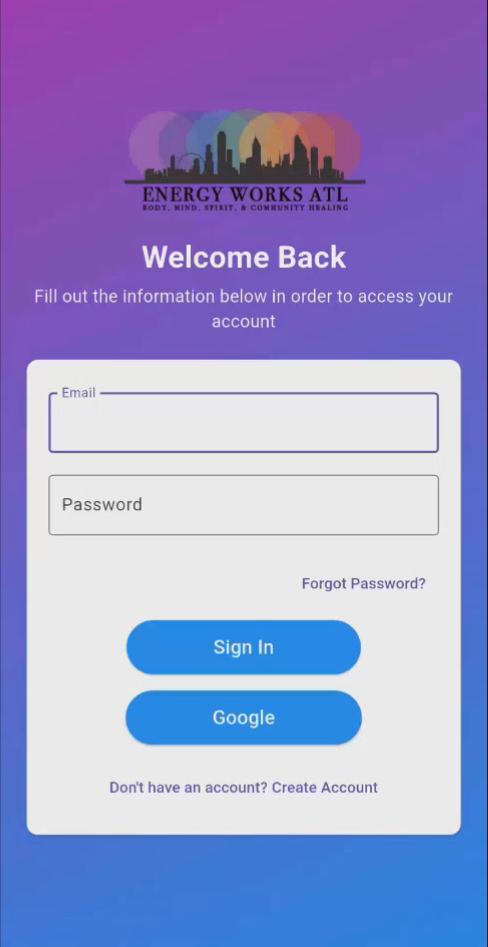
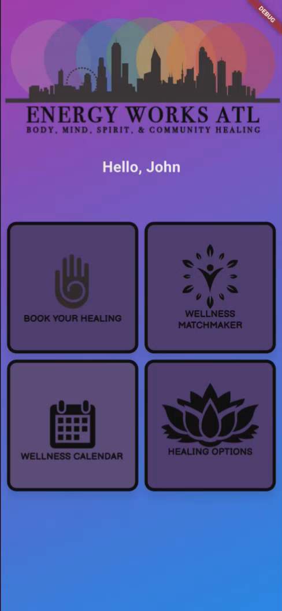
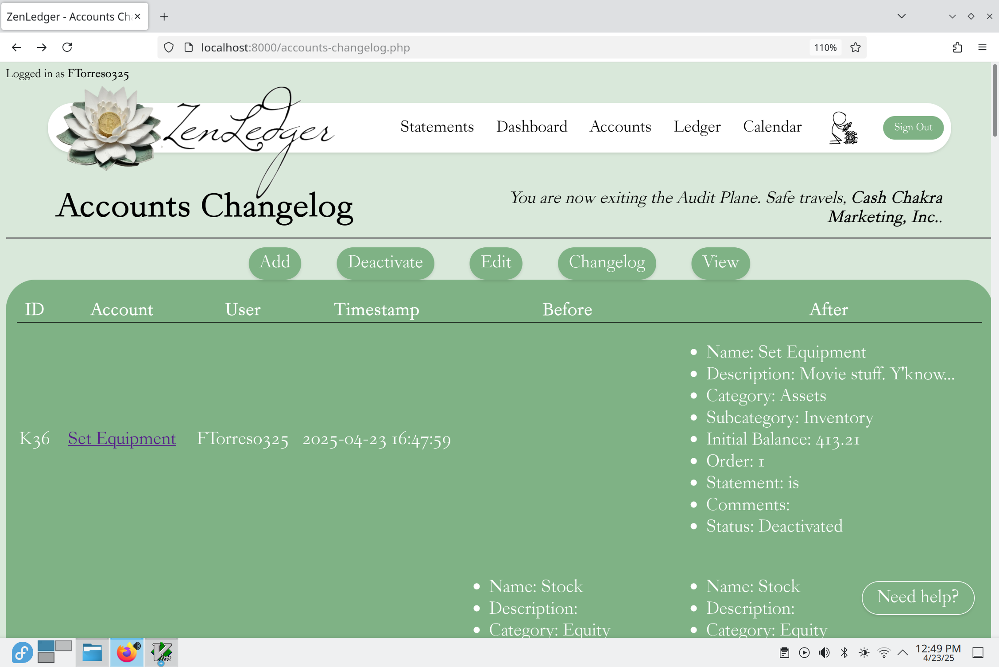
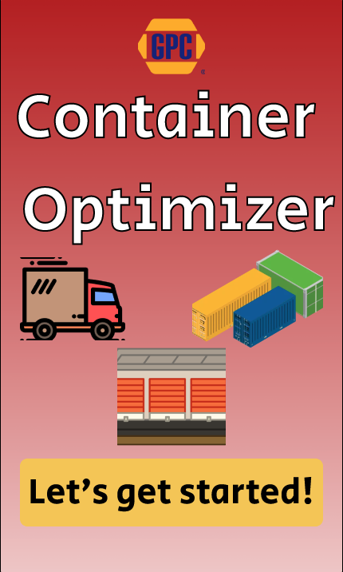
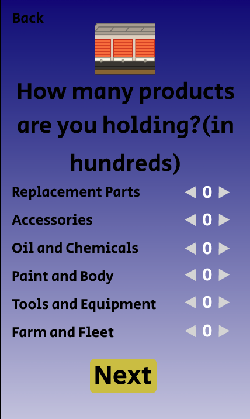

Projects
Mobile Receptionist App | Energy Works ATL
Project Overview: A cross-platform scheduling and service management application built for Energy Works ATL, a health and wellness business in Atlanta. The app provides a receptionist-style platform where users can explore services, book appointments, and receive recommendations, while admins manage services, staff availability, and users in real time.
Technologies Used: Flutter, Dart, Firebase, Provider (state management)
My Contributions:
- Served as team leader, delegating tasks, coordinating progress, and ensuring project quality across all deliverables.
- Focused on front-end development, building intuitive and responsive interfaces in Flutter.
- Connected application pages and integrated Dart logic for features such as buttons, navigation, and calendar scheduling flows.
- Ensured seamless interaction between the front-end and Firebase, enabling role-based functionality for Admin, Manager, and Accountant users.


Accounting Website | ZenLedger
Project Overview: A full-stack web application called ZenLedger designed for managing financial records, transactions, and account summaries. The platform streamlined data entry, storage, and reporting by combining an intuitive front-end with robust database integration.
Technologies Used: HTML, CSS, JavaScript, PHP, PostgreSQL
My Contributions:
- Developed key algorithms for financial calculations and record aggregation stored in the SQL database.
- Built the login and sign-up screens, ensuring secure user authentication and session handling.
- Implemented both front-end UI elements and back-end PHP logic for managing user transactions.

Automated Test File Generator | Northrop Grumman
Project Overview: Developed in a secure classified environment, this tool converted unstructured text files into structured test files used by automated testing systems. It streamlined the process of preparing test inputs, ensuring engineers could run consistent and accurate test sequences.
Technologies Used: C#, WPF
My Contributions:
- Implemented methods to identify and map test steps from sentence-based input files into the required structured format.
- Optimized parsing logic for accuracy and maintainability, supporting multiple input variations.
- Collaborated with engineers to align output with automation frameworks and testing requirements.
Test Results Summarization Tool | Northrop Grumman
Project Overview: A standalone desktop application created for the hardware engineering team to simplify 100+ page text logs into concise CSV reports. The tool reduced manual effort, improved accuracy, and made critical test results more accessible to engineers.
Technologies Used: C#, WPF, Regex
My Contributions:
- Designed and developed the end-to-end solution, from requirements gathering to deployment.
- Transformed verbose log outputs into clear CSV summaries highlighting the most relevant information.
- Built a user-friendly WPF interface that allowed hardware engineers to process logs quickly and reliably.
- Validated results with the team to ensure reports matched engineering needs and workflows.
Container Organizer (Hackathon – 3rd Place) | NAPA/Genuine Parts Company
Project Overview: A load optimization tool built during the Fall 2023 KSU Hackathon for GPC/NAPA. The application analyzed shipment data and truck sizes to recommend the most efficient load configurations, helping improve transportation efficiency and cost savings.
Technologies Used: Java, Figma
My Contributions:
- Led all front-end development, designing and implementing the user interface with Java and translating the mockups created in Figma into a functional application.
- Ensured smooth user interaction with key features, including shipment input forms, optimization results display, and efficiency recommendations.
- Collaborated with teammates on algorithm integration and testing, ensuring seamless connection between the back-end logic and the UI.
- Earned 3rd Place recognition for the project, highlighting innovation and usability under time constraints.


Upcoming Projects
Disney College Program Website
Overview: Developing a personal website to track and evaluate my experiences in the Disney College Program, including professional growth, goals, achievements, and reflections.
Goals: Build a user-friendly interface using React and Firebase for content management, organize experiences for easy analysis, and create a platform that supports continuous learning and self-assessment.